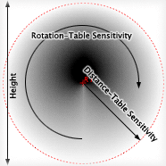

The Sigma Receiver was the first class of receivers implemented in Meloncillo, and is modelled after the software Sigma-1 (a spatializer for ProTools). Its sensitivity is the product of two tables, a distance and a rotation table. For each point on the surface that lies within the receiver's bounds - given by the width and height settings -, the sensitivity is a value taken from the distance table - as a function of the distance of that point to the receiver's anchor (or center) - multiplied by a value taken from the rotation table - as a function of the angle of that point to the receiver's anchor.
By default, the rotation table is constant 1.0 which means there is no emphasis or attenuation of the sensitivity with respect to the angle. The default distance table is the square root of a falling line, having a value of 1.0 at the center of the receiver, and a value of 0.0 at the outer border of the receiver. Hence, a transmitter approaching the receiver will have a volume starting from zero (minus infinity decibels) and ending at one (or zero decibels = unity gain) in the receiver's center. The square root law makes it easy to use multiple overlapping receivers and have an equal-power intensity crossfade.
For small speaker setups, such as quadro, the Sigma Receiver is not the best choice, because you have to make rectangular movements in order to keep unity gain, while circular movements would result in "leaking" loudness. The Sector Receiver is a much better choice here.